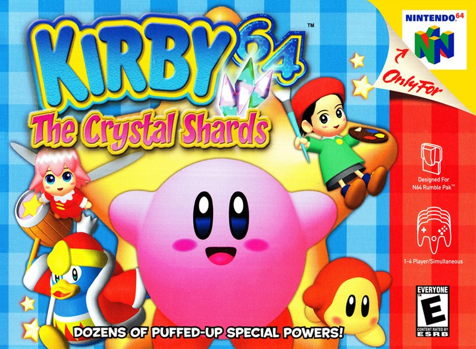
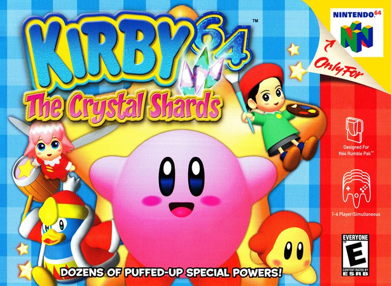
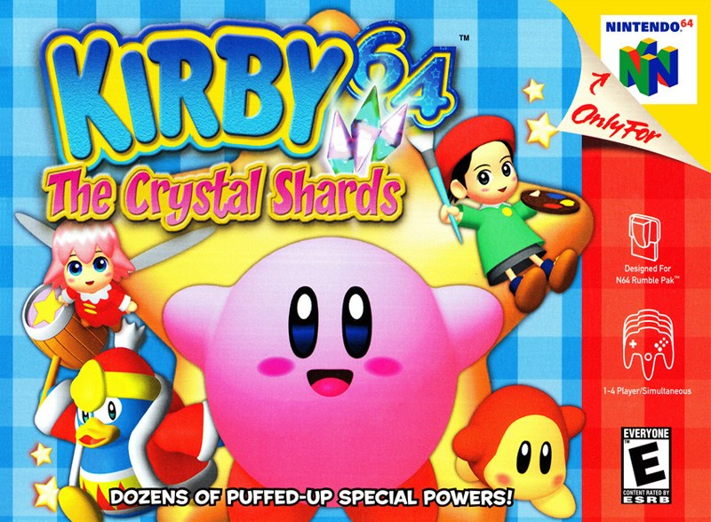

Conker's Bad Fur Day is a platformer video game made for the Nintendo 64 console. The game follows the story of Conker the Squirrel; a greedy, heavy-drinking red squirrel who attempts to return home to his girlfriend.
More like this



 
